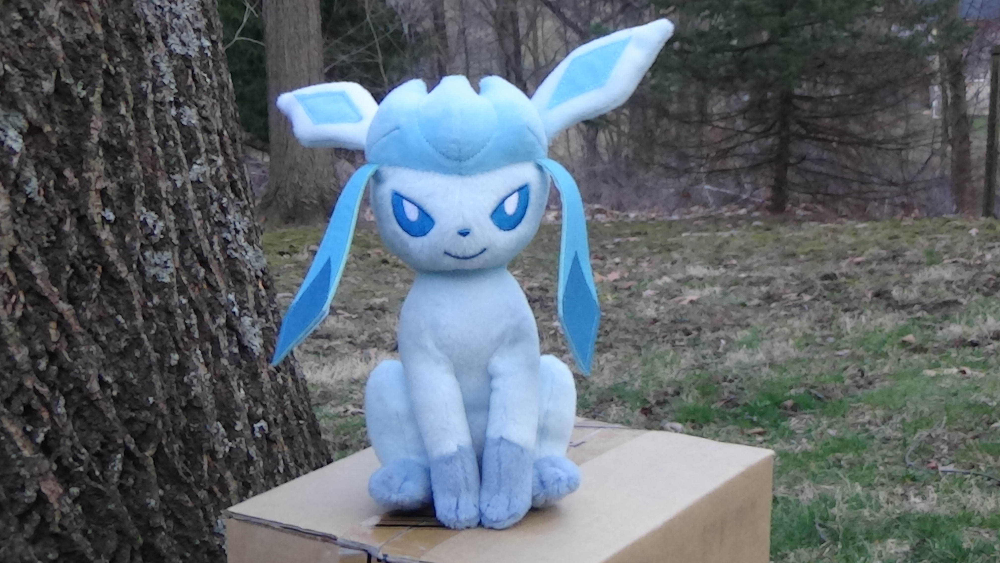

I'll be rating all of the plushies I own using the following criteria on a scale from 1 to 10:
Cuddly: How nice and comfortable it is to hold and hug the plushie. Arguably the most important criteria.
Interesting: How unique the design of the plushie/source material is. Usually correlates with how many details there are.
Details: How many details there are, and how nicely the details are made.
Construction: How solid, durable, and well-made it feels. I personally don't like soft/floppy plushies.
Overall: This is not an average, just my opinion of the plushie in general.
Name |
Image |
Description & Ratings |
Mega Lucario |
 |
Cuddly: 100/10 - He's 15" tall, which automatically makes him more huggable than the other plushies. Interesting: 100/10 - Lucario has always been a super rad Pokémon design. A ruthless warrior jackal that can read and modify the thoughts and emotions of anyone within a half-mile radius? Awesome. Details: 100/10 - All of his markings, little spikes, and weird fur fluff thing on his back all look great. He even has pads on his paws! His head and face are especially nice - especially his lil snout. Construction: 100/10 - Firm, solid, yet flexible enough to move and hug. The stitching isn't coming loose anytime soon, that's for sure. Overall: 10000/10 - I don't think I'm exaggerating when I say this Lucario is probably the best thing in existence. The only thing better would a be life-size one - I'll probably end up getting one made sometime. Click here for a hi-res, wallpaper-worthy picture of him. |
Arceus |
|
Cuddly: 1/10 - Too small, and too many little pointy details to be huggable at all. Interesting: 10/10 - One of the more intricate designs, Arceus just looks cool. Details: 10/10 - Arceus has a lot of weird little details and pointy things, and they are all present and nice-looking on this plushie. Construction: 6/10 - He's pretty flimsy (especially his legs), probably because he's so small. He doesn't feel like he'll come apart at all though, which is good. Overall: 6/10 - This Arceus is a limited-edition anniversary thing that a friend picked up for me. Too many little and pointy details make him not very cuddly or solid. That is an inherent flaw with Arceus himself though, so it's not the plushie's fault. Arceus just isn't very plushie-able. |
Eevee |
 |
Cuddly: 9/10 - This plushie is as cute and cuddly as the real thing (he's real in my heart). His fur is really soft. Interesting: 6/10 - To be honest, Eevee isn't the most interesting design, even if he is one of the cutest things around. Details: 9/10 - As mentioned earlier, Eevee doesn't have a lot of interesting designs, Construction: 10/10 - Same as most of the other plushies - solid, firm, and well made in general. Overall: 9/10 - Basically everything you could want in an Eevee plush. |
Espeon |
 |
Cuddly: 7/10 - He has really soft fur, but is just a bit too small to be huggable. Interesting: 7/10 - A bit more interesting than Eevee, mostly because of his colors and extra ear details. Details: 10/10 - Just like Eevee, everything here is great. I gave Espeon an extra point over Eevee because Espeon's ears are actually stuffed, not just a few layers of fabric. Nice touch. Construction: 10/10 - Same thing as usual: firm, solid, well-made in general. Overall: 8/10 - Espeon isn't anything extremely special, but is still somewhat cuddly and pretty nice to look at. |
Flareon |
 |
Cuddly: 9/10 - Flareon's fur is by far the softest of any of these plushies. He's a big bigger than a few of the others, which automatically makes him more huggable. Interesting: 7/10 - A spicy fire doggo, but with EXTRA FUR. Details: 9/10 - Everything is great, but his yellow fur is especially amazing. The English language is lacking in words to use to describe how soft and smooth it is. Construction: 10/10 - Same thing as usual: firm, solid, well-made in general. Overall: 9/10 - Super cuddly and made really well. Good overall plushie. |
Glaceon |
 |
Cuddly: 6/10 - Surprisingly soft and huggable, but a bit too firm. I'm pretty picky when it comes to plushie firmness. Interesting: 7/10 - I always found Glaceons pretty neat, probably because they're frosty. Details: 3/10 - Oh man. There's a lot wrong here. His ears aren't just fabric, there's a plastic tab keeping them in place. Unfortunately, the plastic tabs on this one are very...not symmetrical, leading to one of the ears to point in a totally different direction than the other. The weird flappy things that hang below his ears are made out of some kind of material that if bent, will stay that way forever. See the picture for what I'm talking about. His eyes and face just look off - there's something not quite right there. Construction: 5/10 - Still feels solid like the others, but is too firm for my liking. See the details section for more reasons why I'm not a big fan of the construction. Overall: 4/10 - Poor Glaceon seems to be having some trouble with his ears...and a few other things. Not too impressed with this plush, to be honest. Looks pretty derpy. |
Jolteon |
 |
Cuddly: 8/10 - Jolteon is a bit bigger and softer than most of the other ones. Interesting: 8/10 - There's a lot about Jolteon that is neat and unique design-wise, from his white pointy collar to his spiky fur and lack of a tail. Details: 6/10 - The big problem here is his head. It's too big and wide for his body, which makes his eyes weirdly far apart. Other than that, his collar and spikes are pretty nice. Construction: 9/10 - Same thing as usual: firm, solid, well-made in general. He seems a bit softer than the others, which is always nice. Overall: 7/10 - Surprisingly cuddly, the only thing I don't really like about him is his disproportionate head. |
Leafeon |
 |
Cuddly: 5/10 - All of his pointy plant bits make it hard to hold and hug him comfortably. Interesting: 10/10 - Leafeon has an interesting design with the perfect amount of neat little visual details and extras (not too crazy, like Arceus kinda is). Details: 9/10 - As said before, Leafeon has a lot of little details, and all of them are present in this plushie and look great. The little leaf bits that stick out are very thick, so they don't get bent easily. Construction: 9/10 - Same thing as usual: firm, solid, well-made in general. Overall: 7/10 - Definitely one of the nicest looking plushies I have, but he's just not that cuddly. |
Sylveon |
 |
Cuddly: 8/10 - No pointy details stand in the way of giving him hugs, but there's nothing that makes him extra cuddly. Interesting: 9/10 - Probably the most unique Eeveelution (but he's a bit too pastel for my liking, so I docked a point here). Details: 10/10 - All of the ribbons and bows look and feel fantastic. Construction: 6/10 - My biggest problem with Sylveon is his neck. It's too loose, so if you try to pet him, his head just moves up, which leaves both of you with an unsatisfying petting experience. A little too squishy in some places, but still well made, like most of the others. Overall: 7/10 - Pretty cuddly, really nice details, but he needs a stiffer neck. |
Umbreon |
 |
Cuddly: 6/10 - He's one of the smaller plushies, so not that satisfying for cuddling. Interesting: 8/10 - Umbreon is another unique and cool-looking design that isn't too crazy with little details. Details: 7/10 - The yellow markings on him are all nice and where they should be, but his head is a little weird. A bit too wide or not deep enough or something, so his eyes end up too far apart. His fur is also dark grey instead of black, which looks kinda weird. Construction: 9/10 - Same thing as usual: firm, solid, well-made in general. Overall: 6/10 - Well made with nice markings, but not amazingly cuddly or interesting. The weird fur color annoys me a bit more than it should. |
Vaporeon |
 |
Cuddly: 9/10 - One of the biggest Eeveelution plushies, so he's automatically really huggable. He is also the perfect firmness for me. Interesting: 9/10 - I would've never thought that a dog, fish, and mermaid could be combined into something that looks nice, but it was accomplished really well, and he's still really cute. Details: 9/10 - This Vaporeon looks pretty much perfect - like he came directly out of a Pokémon game. Construction: 8/10 - The perfect firmness for my liking, and like most of the others, he's solid and made well in general. The only thing that I don't like is the fact that his tail is stuck to his leg. Overall: 9/10 - My favorite Eeveelution has, in my opinion, one of the best Eeveelution plushies. |